A
Audio-Reactive Material
Realtime surface and particle behaviour driven by sonic structure.
Realtime audiovisual systems
code / light / space
Practice
The practice moves between creative coding, live audiovisual performance, interactive installation and media-system integration — from laptop-scale software to architectural LED, projection and stage environments.
Selected work
Solo study / 2026
A realtime image study where portraits and graphic forms collapse into a reduced alphabet of pixels, symbols and colour fields — moving between legible faces and computational abstraction.
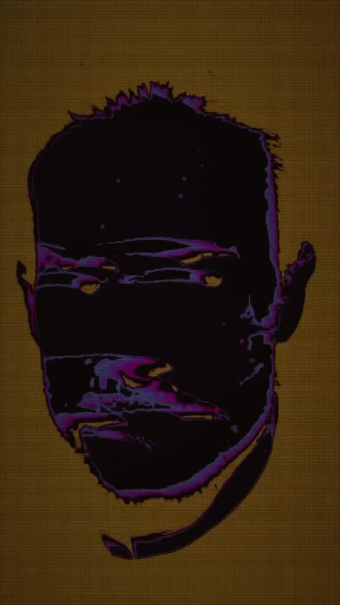
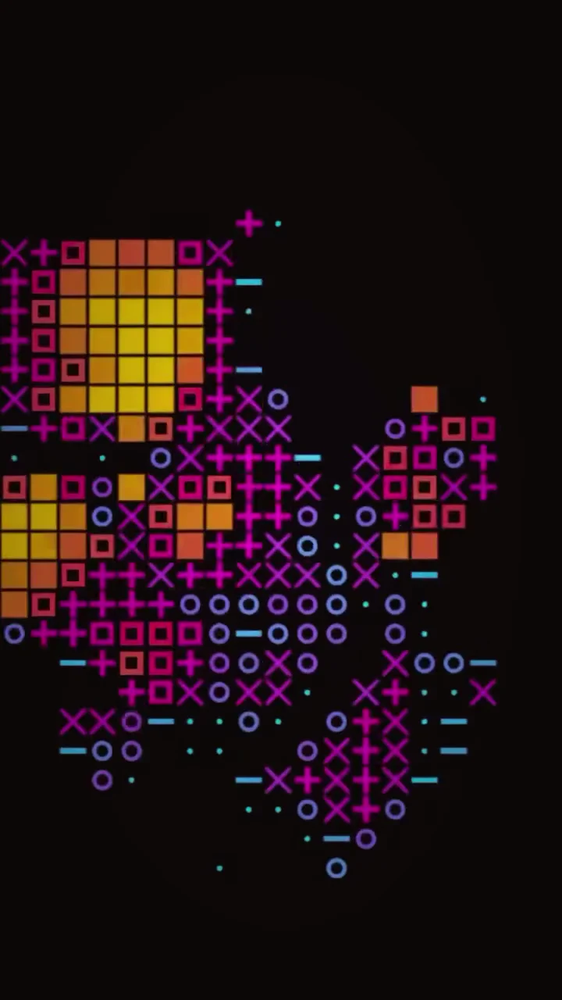
Solo project / 2026
A software-first TouchDesigner game system combining classic Snake logic, music synchronisation, custom UI, an online leaderboard and database integration. Built as a complete solo system rather than a visual effect.

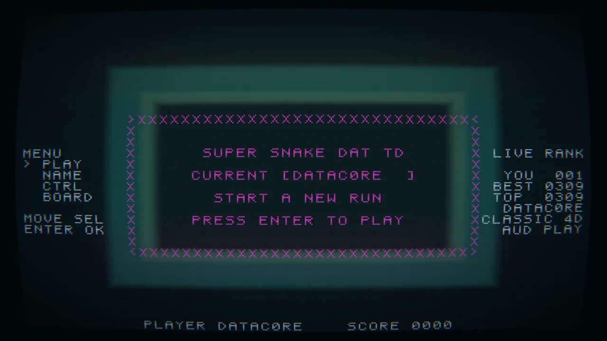
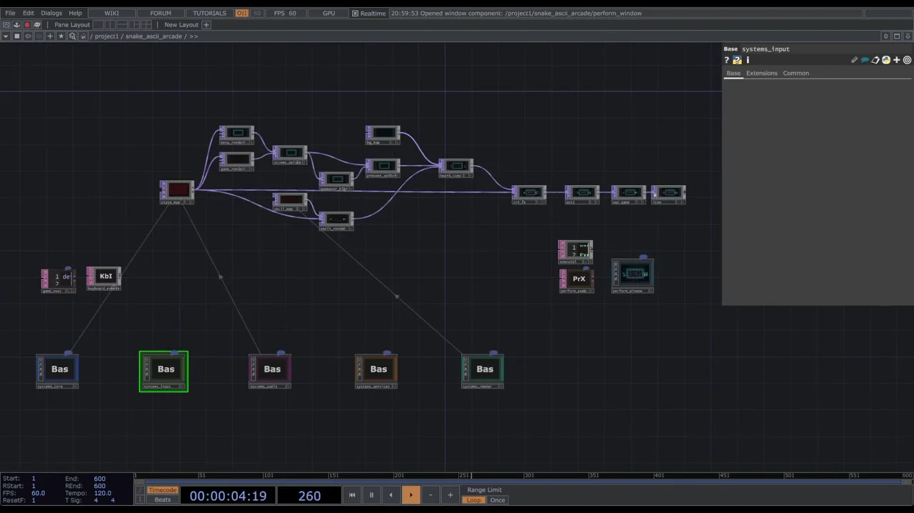
Collaborative project / Geneva Lux / 2025
An interactive LED tunnel developed with StripLab for Geneva Lux. My contribution crossed design, fabrication, realtime programming and integration — from Fusion 360 and network planning to TouchDesigner, lighting behaviour and on-site setup.
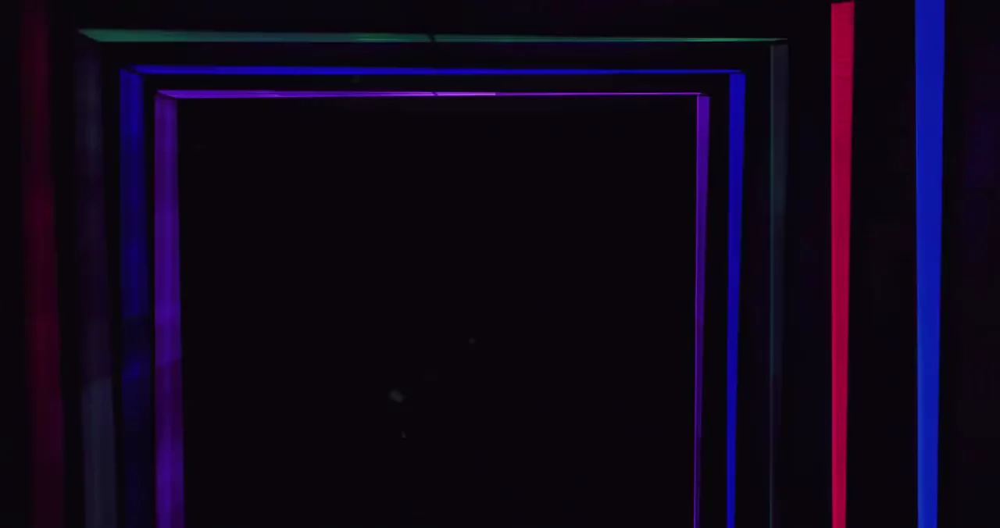
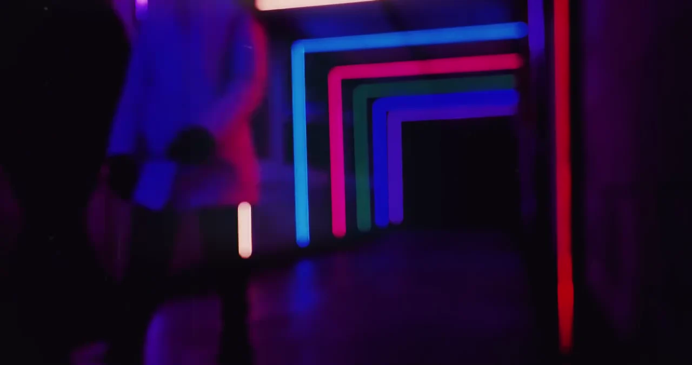
Role
Research series / 2025
Two separate audio-reactive studies exploring material behaviour, cellular structure and temporal response. Presented together as research, not merged into a single artwork.
Realtime surface and particle behaviour driven by sonic structure.
Cellular logic used as a visual field rather than as a decorative overlay.
Collaborative project / Hardwinner / 2016
A church-scale audiovisual system developed from simulation to live deployment: realtime 3D visualisation, custom show control, TouchDesigner, LED / DMX / video control and technical fabrication.
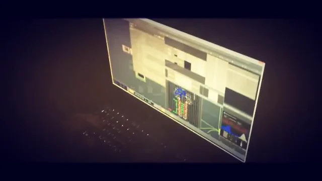
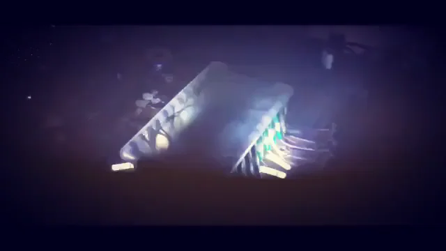
Collaborative live systems / 2016—2018
A sequence of techno-oriented live systems extending the same realtime vocabulary across different venues and events — lighting control, BPM-synchronised behaviour, LED architecture, Resolume, TouchDesigner and later GLSL-based live visuals.
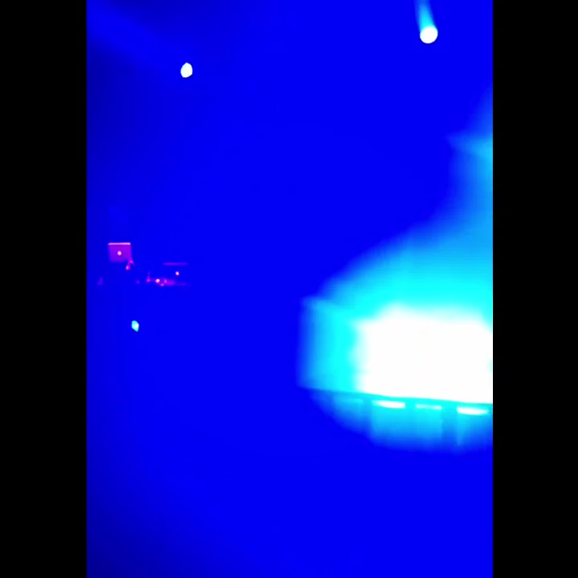
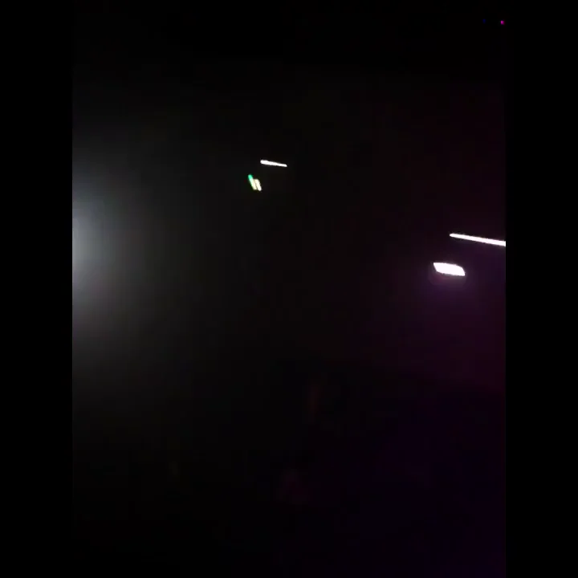
Solo study / 2018
A timelapse of clouds transformed through anisotropic GLSL processing in TouchDesigner. The source remains recognisable while becoming a shifting painterly field of colour, density and directional texture.
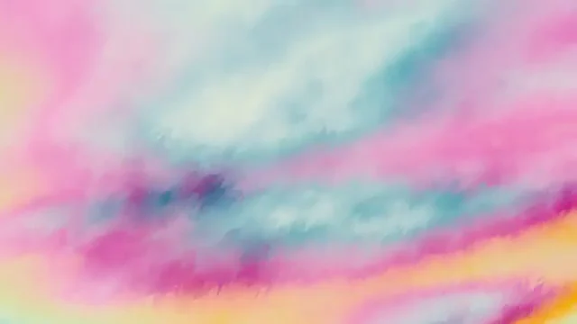
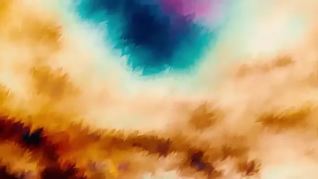
Solo system study / 2017
A spatial audiovisual system study combining LED-screen logic, light, SoundFX and realtime audio analysis. The visual language uses repeated luminous frames to turn a flat output into an architectural tunnel.
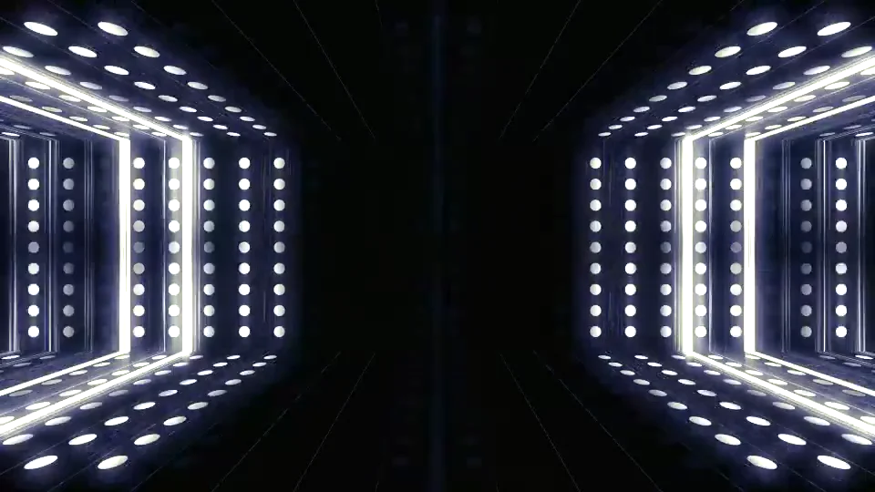
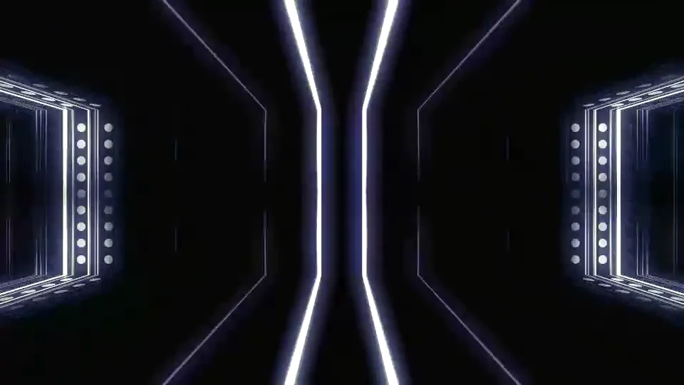
Selected theatre / stage systems
SMODE programming, cue creation, projection integration, monumental soft-edge work and on-site calibration across multiple planes using very short-throw optics.
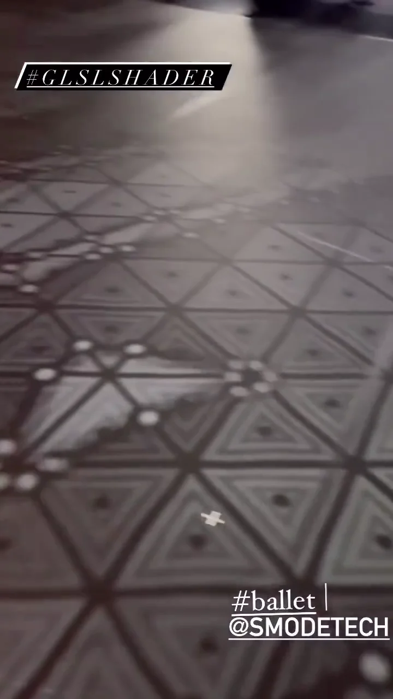
Creation-period documentation at the Comédie de Genève around Entre chien et loup, with camera/control and stage-preparation environments documented in the archive.
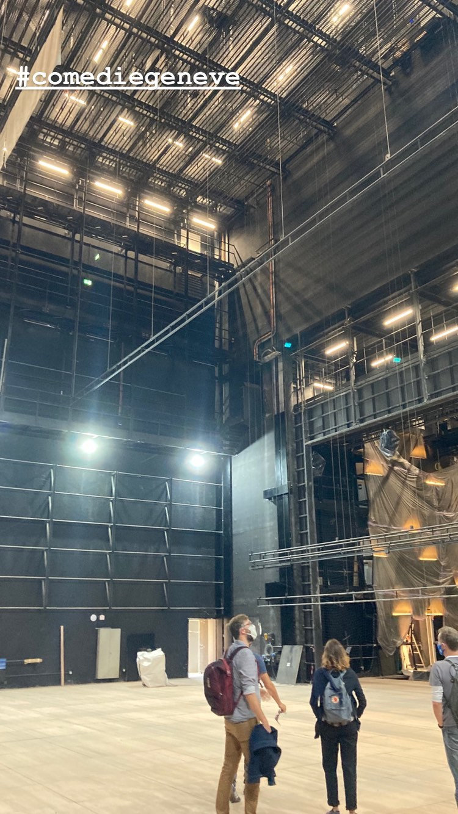
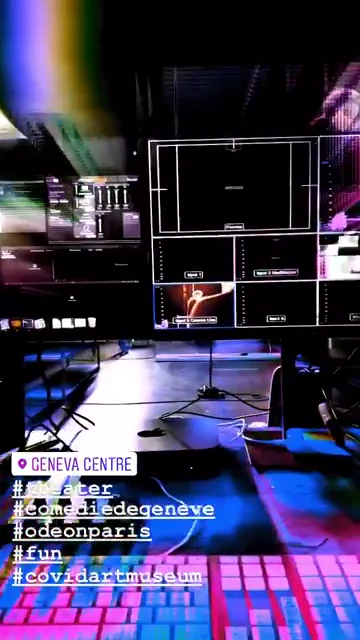
Realtime video and lighting systems linking TouchDesigner, Resolume, LED screens and DMX-controlled fixtures — including live colour synchronisation and show-control interfaces.
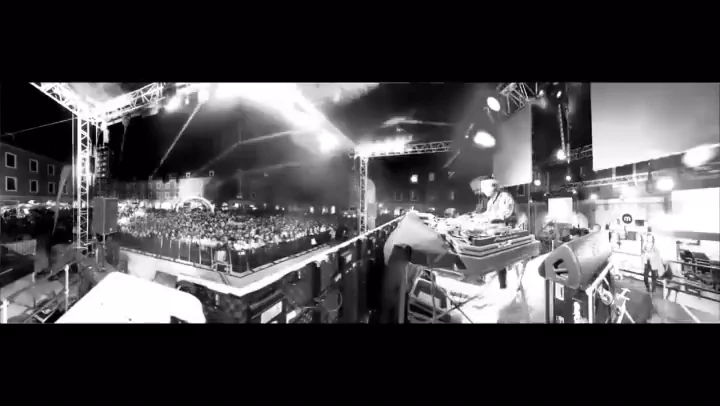
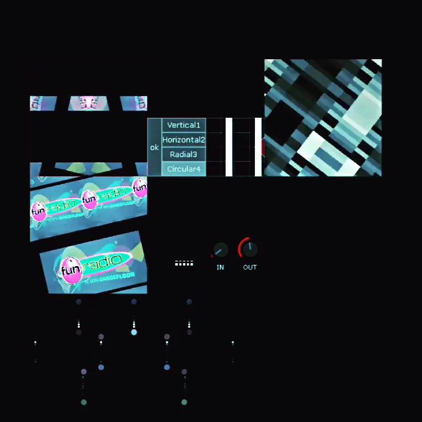
Selected R&D / 2016—2025
Current direction / 2027
The next body of work is designed to travel light: a laptop-scale core that can expand through the technical infrastructure available on site rather than depending on a fixed touring installation.
Profile
Working across creative coding, live visuals, interactive light, projection and realtime media systems. The portfolio spans solo software studies, collaborative installations, electronic-music performance and institutional production environments.